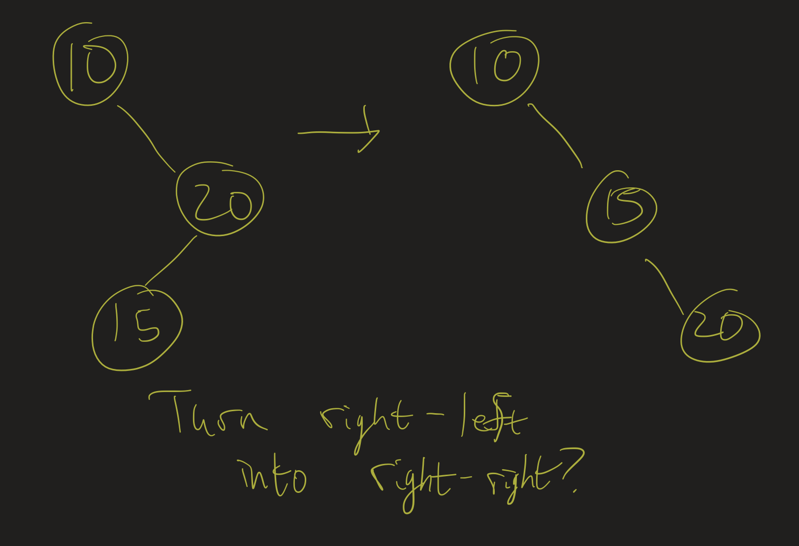

Data Structures
Professor Abdul-Quader
Lesson 7 (Tree Rotations / AVL Trees)
Presentations
Six presentations today.
Project 1
Project 1 is due Sunday. Questions?
Theory
- The level of a node in a tree is the length of the path from the root to that node. Example: the root is at level \(0\), its children are at level \(1\), etc. The height of the tree is equal to the highest level of the tree.
- A full binary tree is a tree for which every non-leaf node has exactly 2 children.
- A complete binary tree is a binary tree in which every level (possibly except the last) is completely filled, and all nodes are as fall left as possible.
Theorem
Exercise (Might be homework at some point): Suppose \(T\) is a complete binary tree of height \(h\) and the last level is completely filled. Then \(T\) has exactly \(2^{h+1} - 1\) nodes.
Therefore: a complete binary tree of height \(h\) has between \(2^h\) and \(2^{h+1} - 1\) nodes. That is:
- a tree of height 0 will have 1 node
- a tree of height 1 will have between 2 and 3 nodes
- a tree of height 2 will have between 4 and 7 nodes
- a tree of height 3 will have between 8 and 15 nodes
Height
- If \(T\) is a complete tree with \(N\) nodes, then its height is \(\lfloor \log_2(N) \rfloor\); that is, the height of the tree is \(O(\log(N))\).
- Insert: \(O(\log(N))\) steps in this case then (need to travel down one path of a tree from the root to a leaf, then insert below that leaf)
- That is, insertion doesn’t happen until the “subtree” is null. That takes \(h\) steps, where \(h\) is the height of the tree.
- Contains? On average, how many steps will it take to find a node in the tree?
Contains
- For each node at level \(l\), it takes \(l\) steps to find that node.
- \(2^l\) nodes on each level (you can prove this by induction), and \(2^{h+1} - 1\) nodes in total
- Average level of a node is \(\dfrac{1}{2^{h+1} - 1} \sum_{l=1}^{h} l \times 2^l\).
- Sum? Hard. Just find an upper bound.
- Since \(l \leq h\), above is \(\leq \dfrac{h}{2^{h+1} - 1} \sum_{l=1}^h 2^l\)
- Sum of \(2^l\) from \(l = 1\) to \(h\) is \(2^{h+1} - 2\), this is roughly \(h\), or \(O(\log(N))\).
Worst Case
Remember, the running times are all based on the height of the tree. Given a tree with \(N\) nodes, what’s the worst possible height of such a tree? What insertion order gives that height?
Preventing
Next topic: trees that are self-balancing, which will prevent the tree from getting too unbalanced.
Tree Rotations

- Preserves “Search Tree” property
- Algorithm?
Right Rotation
L = root.left
root.left = L.right
L.right = root
return LMakes L the new root of this subtree.
Left Rotation
Similar idea:
R = root.right
root.right = R.left
R.left = root
return R- Makes R the new root of this subtree
- Inverse operations:
- Right rotation followed by left rotation?
Exercise
Draw the trees we obtain after the following sequence of operations:
- (Create a new tree)
- Insert 0, 4, 2
- Rotate right around 4
- Insert -1, 1
- Rotate left around 0
Balancing
What does an “unbalanced” tree look like?
Unbalanced Trees


Unbalanced Trees
- Can also define left-right and left-left unbalanced trees
- In general:
- if heights of left and right subtrees differ by more than 1
- Keep track of the height of each node
- If one subtree has a larger height than the other, rebalance
- How do we rebalance? Tree rotations!
Algorithms for balancing
Some unbalanced trees can be rebalanced easily:
- right-right: rotate left
- left-left: rotate right
Right-left
- Rotate left around 30?
- Rotate right around 30? (can’t!)
- Solution?
Exercise
Forget about the code for a bit. What should a self-balancing tree do when we insert in the following order: 1, 2, 3, 4, 5, 6, 7?
Draw the pictures of the BSTs that result. When do we trigger a “rebalancing”?
Visualization
- Self-balancing visualization
- When are rebalancings triggered?
Self-balancing
Again:
- Each node keeps track of a “height”
- Ideally: heights of the left/right subtrees are equal
- If there are exactly 8 nodes? What’s the most “balanced” tree?
Self-balancing pseudocode
RR

Right-right: rotate left
RL
20->15, rotate right around 20, then left around 10" />
Right-left: rotate right around 20, then left around 10.
Difference?

- How to tell right-right vs right-left?
height(subtree.right.right) >= height(subtree.right.left)
Code Snippet
private TreeNode<T> balance(TreeNode<T> subtree) {
int balance = height(subtree.left) - height(subtree.right);
if (balance > 1) {
// left-left
if (height(subtree.left.left) >= height(subtree.left.right)) {
subtree = rotateRight(subtree);
} else {
// left-right
// left rotation turns this into left-left
subtree.left = rotateLeft(subtree.left);
// right rotation rebalances
subtree = rotateRight(subtree);
}
} else if (balance < -1) {
// right-right or right-left?
// do the opposite as above
}
// update height
subtree.height = 1 + Math.max(height(subtree.left), height(subtree.right));
return subtree;
}Video
Analysis
- Adelson-Velsky, Landis (1962): AVL Trees
- Height is \(O(\log(n))\)
- So contains is \(O(\log(n))\).
- Insert/remove may trigger rebalancings. How many?
- Only up one branch of the tree! So still \(O(\log(n))\).
- Adelson-Velsky/Landis proved: worst case height is about \(1.44 \log(n)\).
Video
In the above video, I go through the proof that all the operations are \(O(\log(n))\).
Challenge questions
- Tree (not necessarily BST / AVL): Level-order traversal
- AVL Tree Sort / running times
- Tree (not necessarily BST / AVL): Path from root to a node N
- Tree (not necessarily BST / AVL): Node N, height \(h\), find ancestor of \(N\) that is \(h\) levels above.
- Tree (not necessarily BST / AVL): two nodes, find lowest common ancestor
Level-order
Given a tree T, output its nodes in level-order. That is, output the root first, then output the root’s children, then the grandchildren, etc.
Hint:
- Nothing to do with BST
- We’ve seen this before (kind of)…?
AVL Sort
Implement a method in the AVL Tree class which returns a List of items in sorted order:
Asymptotic running time (if the tree has \(N\) elements)?
AVL Sort (continued)
Asymptotic running time of the following: